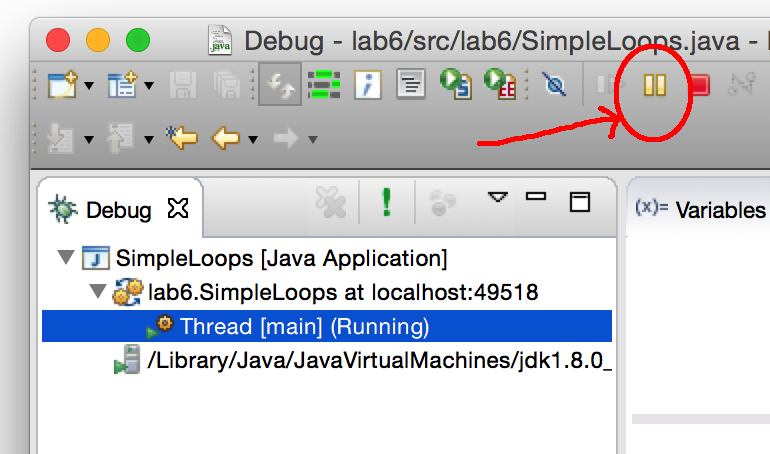

Debugging loops
By now you have learnt about debuggers and have been able to use the common features. You will now learn about debugging loops.
Add the following file to your project:
SimpleLoops.java
The method countP does not have bugs, and
the method findLastP, does have bugs. (The third method findFirstP, we'll look at in the next section.)
Stepping through a loop
Being able to single-step through loops is probably one of the single most useful things you can do with a debugger. Try this first by running the methodcountP:
- Find the line with the
whilestatement incountP, and set a breakpoint on that line. Run the program in debug mode. - Use Step Over or F6 to single-step through the code. Notice in the Variables pane you can see the index
ichanging each iteration andcountbeing updated each time a "P" is found. - After execution completes, run again in debug mode. This time, after you break at the
whilestatement, instead of single-stepping, use "Resume" button. This is a little green triangle among the buttons above the Debug pane, to the left of the red "stop" button. - Each time you press the resume button, execution continues until you hit the next breakpoint, (which in this case is just the same breakpoint again). This is a useful way to step through entire iterations of a loop without having to single-step through each line.
Breaking into an infinite loop
Sometimes when your code goes into an infinite loop, or seems to be doing nothing at all, it is not obvious where or why it is happening. A useful technique is to break into the code while it is executing. We will try this on the methodfindLastP:
- First, edit the main method by un-commenting the next two lines (the ones including the call to
findLastP). - Run the program. Notice that it seems to be doing nothing, but you still see the little red square "stop" button in Eclipse. That's usually a sign of an infinite loop.
- Click the "stop" button to terminate execution. Now run it again in debug mode.
- While it's running, switch to the Debug perspective.
- In the Debug pane, you'll see an item with the name of the main class,
SimpleLoops. Click the little triangle to expand it. - There are a bunch of lines referring to "Threads". Don't worry about what they all mean, just find the one labeled "main" and click on it to highlight.
- Now up among the buttons above the Debug pane, find the "pause" button (two vertical yellow bars); it is just to the left of the familiar red square stop button. Click that pause button.

- The program stops executing! You can see the
findLastPmethod at the top of the call stack. If you double-click on it, the green highlight should become visible. This is the line that was about to be executed when you pressed the pause button. - Now you can step through the code (using Step Over or F6) and see what's going on.
- To the left of the pause button is the "Resume" button (looks like a green triangle). Clicking the resume button causes the code to start executing it again. Try it, and then pause it once more.
- As you single-step through the code, it should be pretty obvious why this is an infinite loop. Now figure out how to fix it.